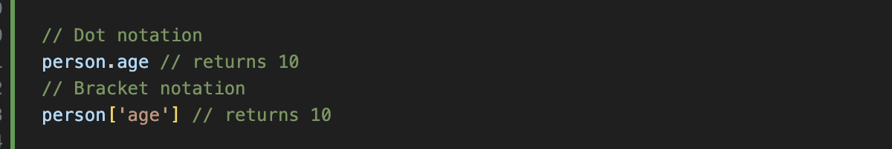

Technical blog
JavaScript fundamentals
14 September 2023
JavaScript and its relationship to HTML and CSS
HTML, CSS, and JavaScript are like the building blocks of a website. HTML structures the content, CSS makes it look good, and JavaScript adds the interactivity.
The form on web page. HTML sets up the text the questions in the form, like name, age, and address. CSS then comes in to make everything look nice, adding style, colour, and formatting. It also creates those input boxes for users to fill out. Now, the magic happens with JavaScript. It makes a little pop-up box appear when someone submits the form, saying "Thanks for entering!" Plus, it can even grab the first name from the form and use it for a more personal touch.
Control flow and loops, arrays, and objects
Control flow statements are one of the most important features in JavaScript.Control flow statements are used to control the flow of execution in a program. They are used to make decisions, execute loops, and handle errors. There are three types of control flow statements in JavaScript: conditional statements, loops, and try/catch statements.
Conditional Statements
Conditional statements are used to execute different actions based on different conditions.
If statement:
Loops
Loops are used to execute a block of code multiple times. JavaScript supports different types of loops, including the for loop, while loop, and do-while loop. The for loop is the most commonly used loop in JavaScript. It is used to iterate over an array or execute a block of code a specific number of times.
For loop:
Objects
When to use objects?
Objects are used to represent a “thing” in your code. That could be a person, a car, a building, a book, a character in a game — basically anything that is made up or can be defined by a set of characteristics. In objects, these characteristics are called properties that consist of a key and a value.
Access, add, and remove items from objects
Properties in objects can be accessed, added, changed, and removed by using either dot or bracket notation. To get the value of the age key in our person object with both dot and bracket notation, we will write:
Arrays
When to use arrays?
We use arrays whenever we want to create and store a list of multiple items in a single variable. Arrays are especially useful when creating ordered collections where items in the collection can be accessed by their numerical position in the list. Arrays consist of strings, numbers, booleans, objects, or even other arrays.
Arrays use 0 based indexing so the first item in an array has an index of 0, the second item an index of 1, and so on. For instance, let's say we wanted to access the third item ('apple') in the following array:
To do that we will write:
Items can be added and removed from the beginning or end of an array using the push(), pop(), unshift(), and shift() methods:
Functions and why they are useful
Functions are one of the building blocks of JavaScript programming for creating web applications. You can think of functions as a way to group a set of instructions together and execute them as a single unit.
A function is a block of code that performs a specific task. JavaScript functions are basically used to contain logic, making that code more reusable and easier to understand.
The syntax for creating a function in JavaScript is quite simple. Functions can take input in the form of parameters and can return a value or output. Functions help you organise and structure your code. They also allow for code reuse and make it easier to understand and maintain large codebases.

The DOM and DevTools
DOM
The DOM is short for Document Object Model, acts as the bridge between HTML and CSS. It's a tree-like structure that represents a web page's structure and content, with each HTML element becoming a "node" in this tree. When we tweak CSS rules, the DOM ensures those changes get applied to the right elements. Think of the DOM as the behind-the-scenes hero that connects your HTML structure with your CSS styles, making sure your webpage looks and behaves just the way you want it to.
DevTools
DevTools is a set of web developer tools that are built directly into the Google Chrome browser. Chrome DevTools is a very useful tool for web app development. It allows you to work directly in the browser and see results in real time. You can use it to preview style changes, alter the HTML or help write your JavaScript code and do some debugging. There are so many ways to use Chrome DevTools. Here are same:
- viewing and changing a page's content (HTML) and styles (CSS)
- debugging JavaScript:
- viewing messages and running JavaScript in the console